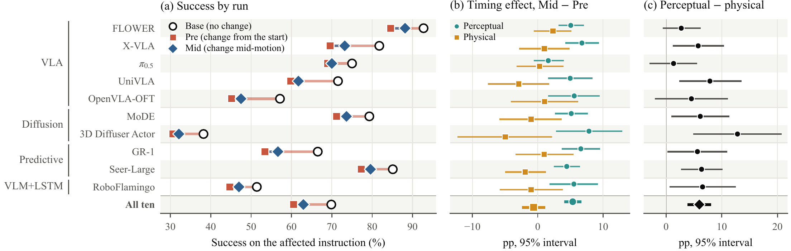
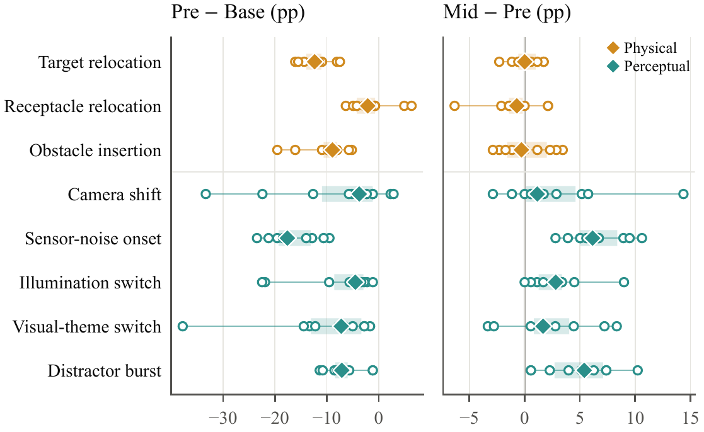
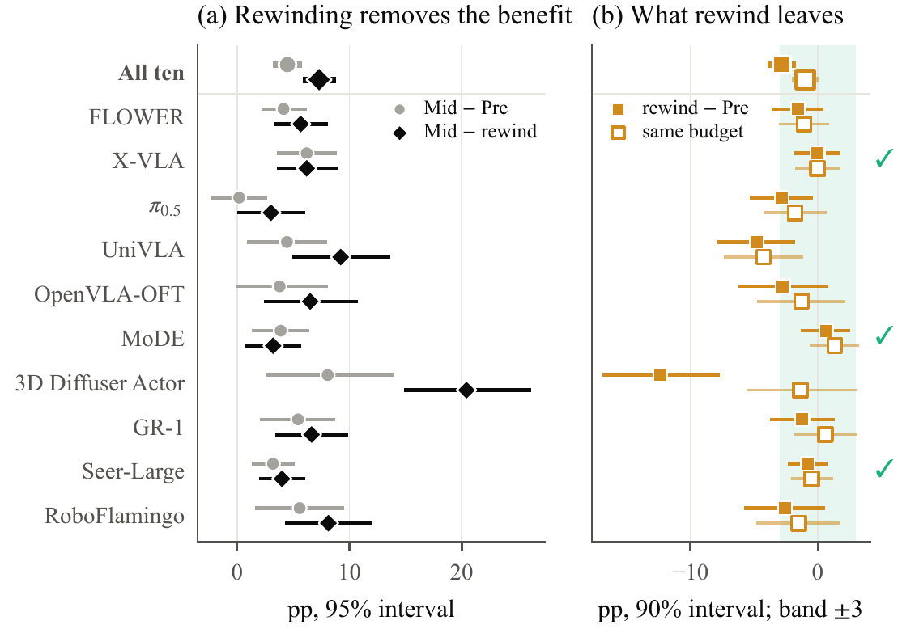
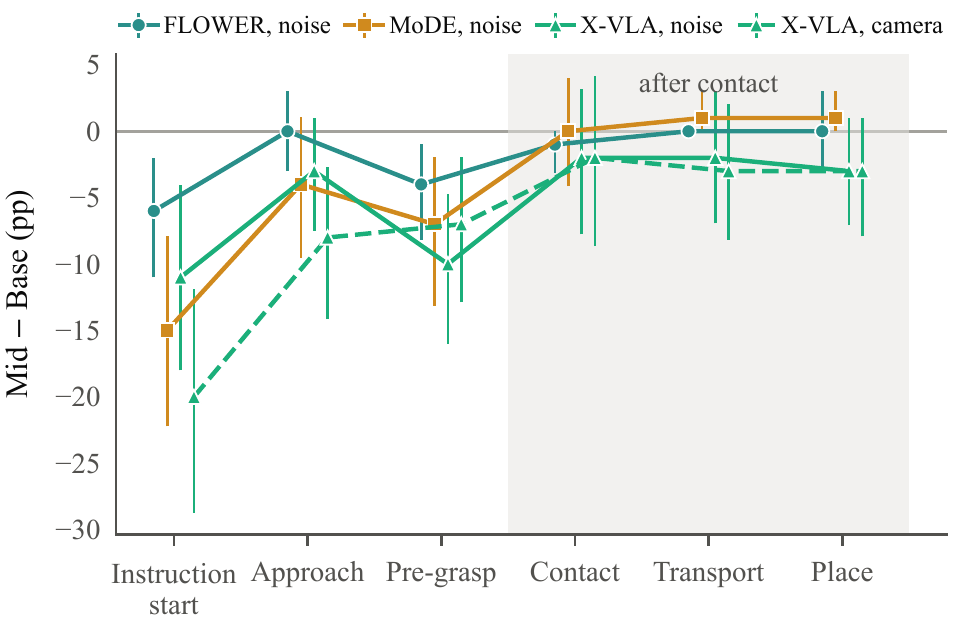
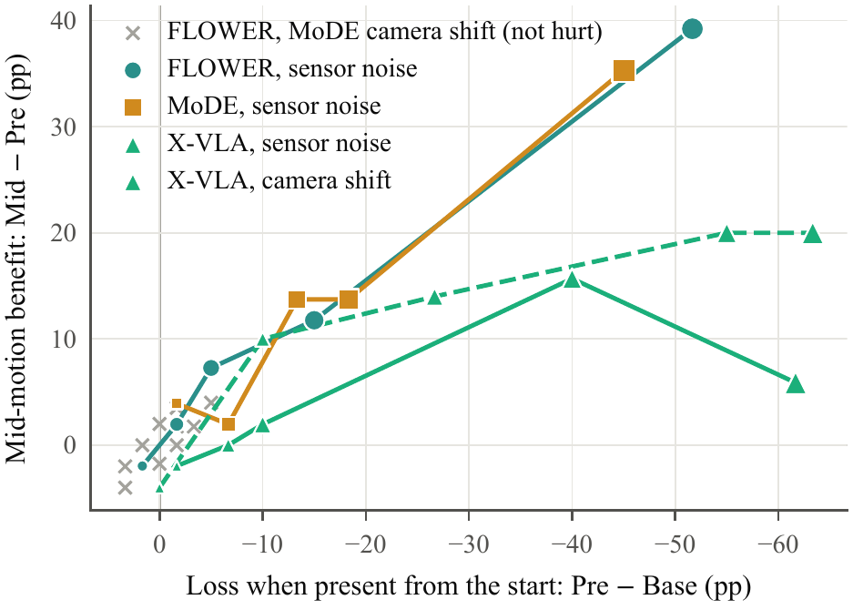
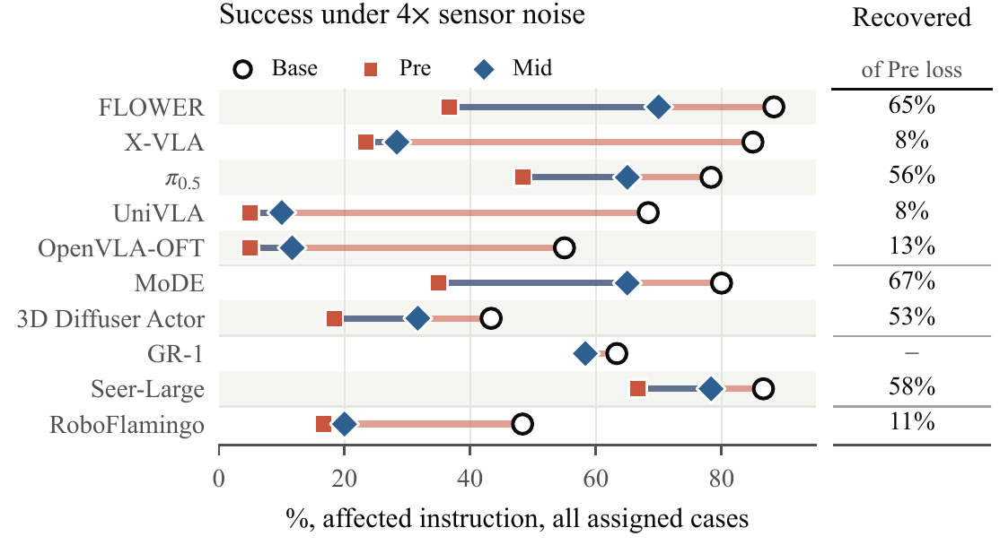
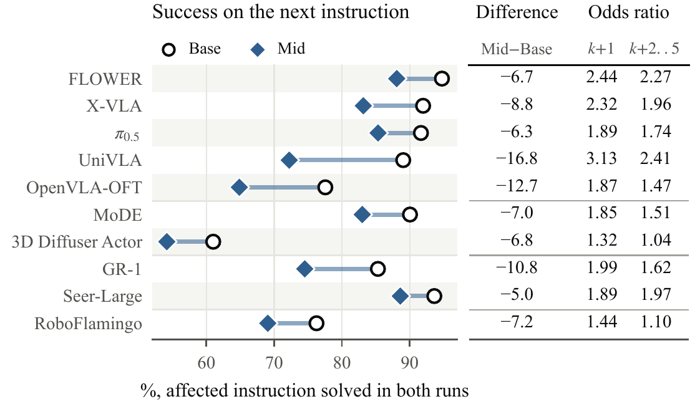
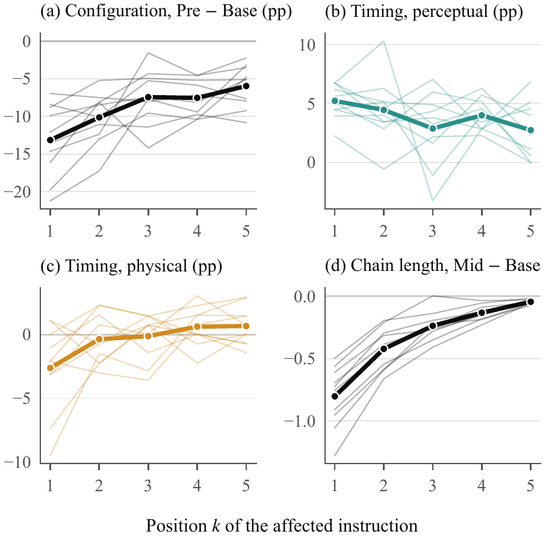
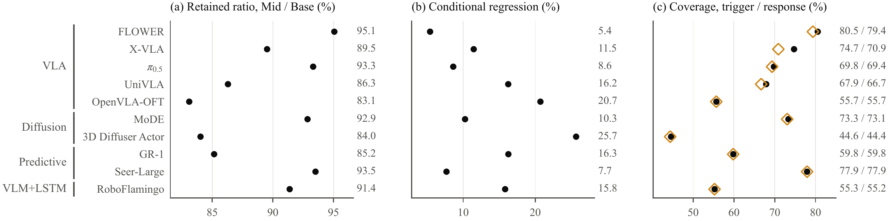

ProjectsRobot policiesBenchmark
CALVIN-MAX
When does a mid-execution change hurt a robot policy?
A benchmark of 7,828 cases in which the world changes while a robot is working through a chain of instructions. Three runs per case, identical up to the change, separate the cost of a changed world from the effect of meeting it mid-motion.
Robots must often keep working after the world changes, as when a block moves or the camera shifts while the robot still acts on what it saw before. Recent work showed that one change during a task lowers success for every policy tested, but left open whether its timing matters and what it costs afterwards. CALVIN-MAX is a benchmark of 7,828 cases on CALVIN's five-instruction chains, each with one change to the objects, the camera, the robot or the instruction.
Each case compares three runs that share every action up to the change: one without it, one with it already in place when the affected instruction begins, and one in which it arrives while the robot is moving. On 1,526 held-out cases per policy, with hypotheses fixed in advance, each of ten released policies loses 4.4 to 9.9 points on the affected instruction. Timing matters only for some changes: a change to what the robot sees costs 5.4 points less mid-motion than from the start, whereas moving an object shows no such effect. The benefit comes from motion already under way, because it vanishes when the robot is rewound to the start of the instruction. The cost also outlasts the instruction: even a policy that completes it is 5.0 to 16.8 points less likely to complete the next one.
cases on 999 of CALVIN's evaluation chains, each fixed before any policy was run, in five tracks: core, phase, embodiment, intent and null.
Unseen scene D, trained on A, B, Cpoints lost on the affected instruction by every one of ten released policies once the world changes.
Held-out cases, Mid against Basepoints: a change to what the robot sees costs this much less mid-motion than from the start. Moving an object shows no effect of timing (−0.6).
Pooled over ten policiespoints less likely to complete the next instruction, even after completing the affected one.
Every policy, Mid against BaseThree runs that differ only in when
A comparison with an undisturbed run mixes two opposing things. A policy hit mid-motion is committed to the old world: actions are queued, the arm is moving and its memory holds a scene that no longer exists. Yet it has also made progress, which may carry it to the goal regardless. A third run separates them.
- Base
No change
The chain runs undisturbed. One Base run per chain serves every case on that chain, and the onset of each change is computed from it with the simulator's privileged state, never from an outcome.
- Pre
The changed world, from the start
Replays Base to the start of the affected instruction and applies exactly the change Mid will receive, such as the same final pose of a moved block. Pre against Base is the cost of the changed world.
- Mid
The change, while moving
Replays Base to the onset, applies the change and hands control back with the policy's queued actions and memory intact. Pre and Mid end in the same world, so Mid against Pre is the effect of timing alone.
The changes
The eight core changes keep the names and purpose of LIBERO-MAX's, so the two benchmarks can be compared, and are grouped by how they reach the policy. CALVIN-MAX adds changes to the robot and to the instruction, two strengths per change, and onsets at six phases of the motion.
How it compares
| Benchmark | Chain | Online | Prefix | Pre / Mid | Onset | Robot and instruction | Behaviour | Units |
|---|---|---|---|---|---|---|---|---|
| CALVIN | ✓ | ✗ | ✗ | ✗ | ✗ | ✗ | ✗ | 1,000 |
| LIBERO-Plus | ✗ | ✗ | ✗ | ✗ | ✗ | ✗ | ✗ | 10,030 |
| LIBERO-PRO | ✗ | ✗ | ✗ | ✗ | ✗ | ✗ | ✗ | 10,000 |
| LIBERO-MAX | ✗ | ✓ | ✓ | ◐ | ✗ | ✗ | ◐ | 8,000 |
| CALVIN-MAX | ✓ | ✓ | ✓ | ✓ | ✓ | ✓ | ✓ | 7,828 |
Every policy loses, but timing matters only for what the robot sees
Ten released policies span vision-language-action models, diffusion policies and models that predict from a history of frames. All lose once the world changes. For a perceptual change the timing effect is positive for every policy: arriving mid-motion costs less. For a physical change there is no detectable effect of timing. The difference between the two, the pre-registered primary test, is +6.0 points [+4.1, +7.9].

Explore one policy at a time
Which changes cost the most
Sensor noise (a median of −17.6 points across policies) and target relocation (−12.3) cost the most when present from the start; relocating the receptacle (−2.1) and shifting the camera (−3.8) the least. On timing the two channels separate cleanly: every physical change has a timing effect at or below zero, while the perceptual ones mostly gain when they arrive mid-motion.

The benefit comes from motion already under way
Why would a change hurt less when it arrives mid-motion? Two diagnostic runs test it. One rewinds the arm and the policy's memory to the start of the instruction while leaving the world changed. Mid beats the rewound run for every policy, so rewinding removes the benefit. What remains, the rewound run against Pre, is within ±3 points for three policies, and the steps lost in rewinding explain most of the remaining gap.

Perceptual changes cost only before contact
The same change at six moments of the motion, from the start of the instruction to placing the object, for three policies. Before contact, a corrupted view costs up to 20 points; after it, almost nothing.

The more a change hurts, the more timing helps
Five strengths of each change, from a quarter to four times the default. Within a policy, the benefit of a mid-motion arrival grows with the damage the change does, and a change that does not hurt gives no benefit.

Under heavy sensor noise, some policies recover most of the loss
An exploratory stress test raises sensor noise to four times its default strength. A mid-motion arrival recovers half to two thirds of the loss for five policies, and about a tenth for four others.

The cost outlasts the instruction
Because CALVIN's tasks are chains of five instructions, we can measure what a change costs after it has been handled. The change stays in place, and even a policy that completes the affected instruction is less likely to complete the next one, by about the same amount whether the change arrived mid-motion or was there from the start.

Earlier changes cost more
A change at the first instruction costs 13.2 points from the start, at the fifth 6.0. The perceptual timing benefit shrinks too, from +5.2 to +2.7, and a change at the first instruction shortens the run by about 0.8 instructions on average.

Most successes survive, but the share lost varies fivefold
Of the runs a policy completes without a change, 83 to 95% still succeed with one. The share that flips to failure ranges from 5% for FLOWER to 26% for 3D Diffuser Actor.

Policies
| Family | Policies |
|---|---|
| Vision-language-action | FLOWER, X-VLA, π0.5, UniVLA, OpenVLA-OFT |
| Diffusion | MoDE, 3D Diffuser Actor |
| Predictive, from a history of frames | GR-1, Seer-Large |
| VLM with LSTM | RoboFlamingo |